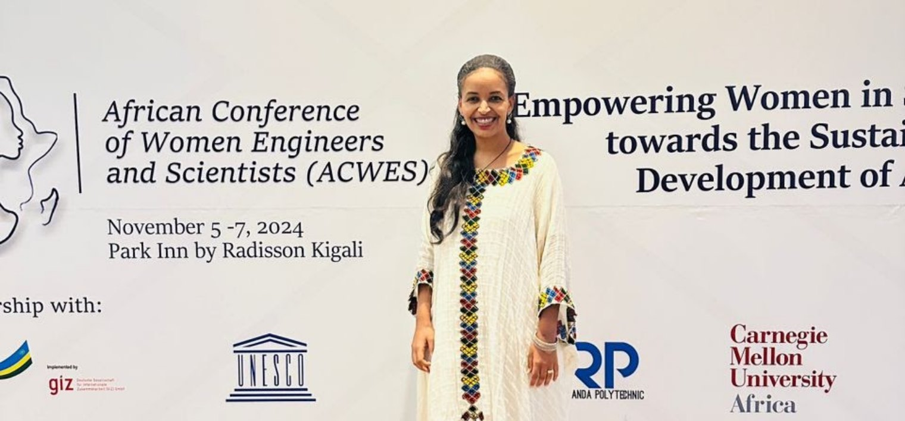

AI and AGI Researcher / Data Scientist / Data Engineer
Building AI that serves everyone fairly.
I believe AI should treat people fairly and be useful to everyone, wherever they live. Over 10 years I have built it for healthcare, finance and the humanoid robot Sophia, and published on bias-free machine learning. Today I do AGI research, including automated theorem proving, so that what AI tells us can be checked, not just trusted.
